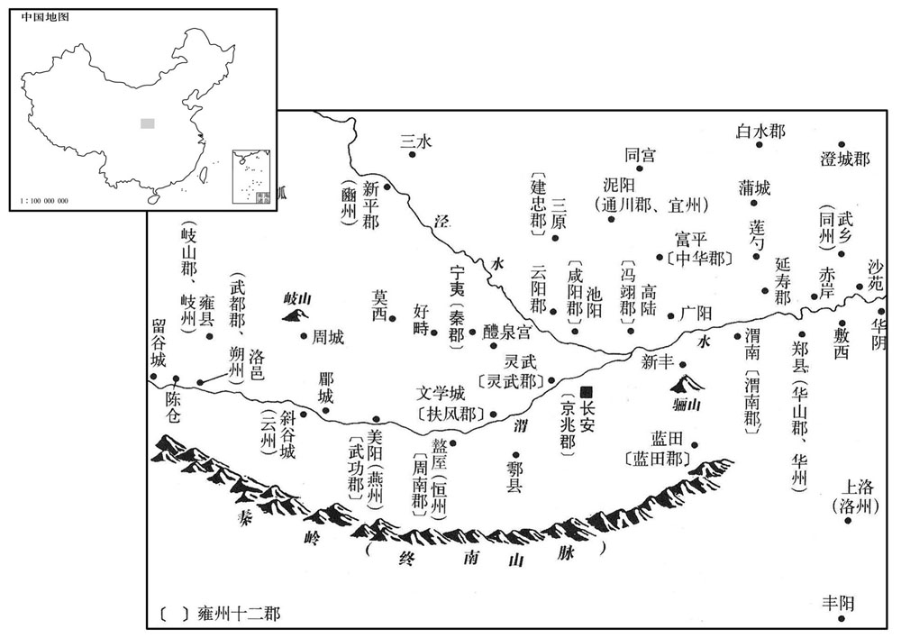
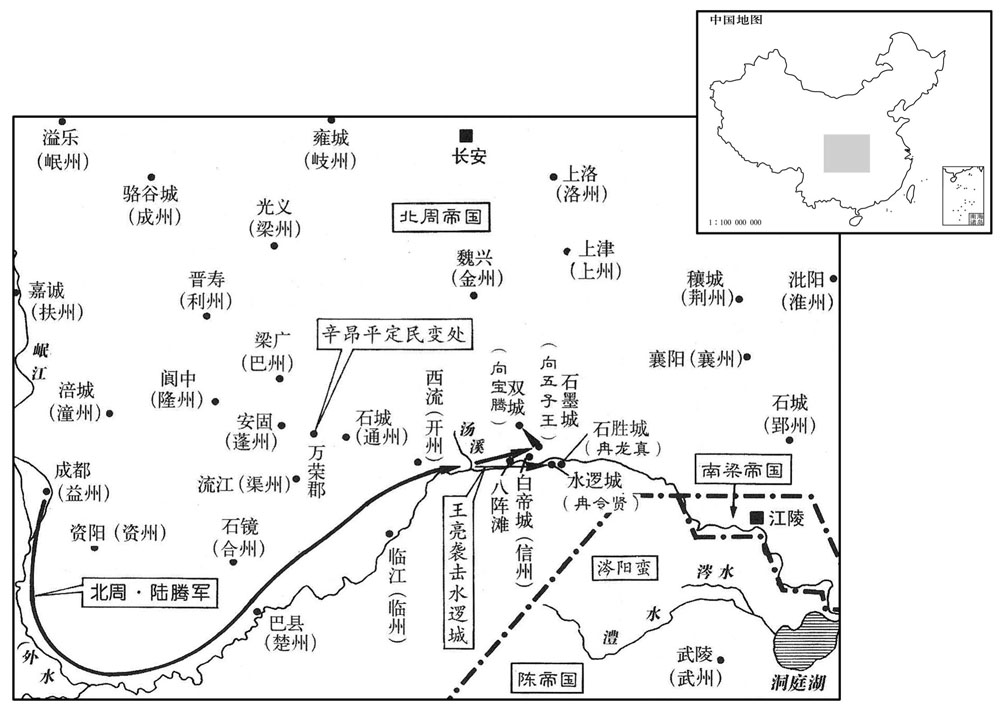

公元566年资治通鉴：本年记事、原文与白话对照
按原书编年位置阅读；追叙和史论不等于本年发生的事件。白话采用所据译本，缺译不以生成译文补齐。
卷169 · 本年记事
公元566年 · 陈世祖文皇帝天康元年
天康元年〔（丙戌、五六六）是年二月改元。〕
上传原文的注释括号有异常，字符原样保留；无法可靠划分的段落默认全文显示。
本年事件索引（现代整理）
- 发生日食
- 北周大赦并改元天和
- 北齐主祭圜丘并举行禘祭
- 北齐任尉瑾为尚书右仆射
- 周武帝亲耕藉田
- 高湛前往晋阳
- 北周派杜杲出使陈朝
- 高湛从晋阳返回邺城
- 陈朝大赦并改元天康
- 陈朝任安成王陈顼为尚书令
- 周主祭祀南郊并举行祈雨
- 陈文帝病重，拒绝废太子改立陈顼
- 司马光批评孔奂未能阻止权臣篡位
- 陈文帝去世
- 陈文帝勤俭明察，常于夜间处理政务
- 太子伯宗即位，陈朝大赦
- 北齐任高普为尚书令，吐谷浑莫昌率部归附北周
- 陈朝任陈顼为骠骑大将军、司徒并录尚书事
- 徐陵主张整顿陈朝泛滥的官员授职
- 北齐封太上皇诸子为王
- 北齐派韦道儒出使陈朝
- 陈文帝葬于永宁陵，庙号世祖
- 北周修筑武功等城，安置军士
- 陈朝立王氏为皇后
- 高湛前往晋阳
- 北周冉令贤、向五子王等起兵攻陷白帝
- 陆腾先平定江南诸城，再攻陷水逻城并擒杀冉令贤
- 陆腾攻破石墨、双城，处死向氏首领
- 陆腾将信州治所迁至八陈滩北面
- 辛昂奉命出使梁、益二州，击退围攻万荣郡的叛军
- 北齐任侯莫陈相为太傅、高湝为太保等
- 北周派使者出使陈朝吊唁
- 周武帝巡察武功等新城后返回长安
- 北齐河间王高孝琬因怨恨执政而遭人进谗
- 高孝琬被指收藏反叛器物，遭高湛折断双腿而死
- 高延宗哭悼高孝琬，被高湛鞭打
- 北齐赐元文遥姓高氏，并任其为尚书左仆射
- 高文遥改革县令任用制度，起用士人任县令

本年形势与背景参考图
春，正月，己卯，日有食之。
春季，正月，已卯（初二），出现日食。
癸未，周大赦，改元天和。
癸未（初六），北周大赦全国，改年号为天和。
辛卯，齐主祀圜丘；癸巳，祫太庙。〔五代志：齐制：圜丘方泽，并三年一祭，谓之禘祀。圜丘则以苍璧束帛。正月上辛，祀昊天下帝。太庙则春祠，夏禴，秋尝，冬烝，皆以孟月，并腊凡五祭。三年一禘，于年一祫，谓之殷祭。〕
辛卯（十四日），北齐国主到圜丘祭天；癸巳（十六日），在太庙举行袷祀。
丙申，齐以吏部尚书尉瑾为右仆射。
丙申（十九日），北齐任命吏部尚书尉瑾为右仆射。
己亥，周主耕藉田。〔藉，在亦翻。〕
两版字句有差异，建议核对原文。
已亥（二十二日），北周国主在藉田举行耕种仪式。
庚子，齐主如晋阳。
庚子（二十三日），北齐国主去晋阳。
周遣小载师杜杲来聘。〔周礼：载师，掌任土之法，以物地事，授地职而待其政令，属地官。其官有上士二人，中士四人，而无大、小之别。五代志：后周置载师，掌任土之法，辩夫家田里之数，会六畜车乘之稽，审赋役敛弛之节，制畿疆修广之役，颁施惠之要，审牧产之政。〕
北周派小载师杜杲来陈朝聘问。
二月，庚戌，齐上皇还邺。
二月，庚戌（初三），北齐太上皇武成帝回邺城。
丙子，大赦，改元。〔改元天康。〕
丙子（二十九日），陈朝大赦全国，改年号为天康。
三月，己卯，以安成王顼为尚书令。
三月，已卯（初三），陈朝任命安成王陈顼为尚书令。[11]丙午，周主祀南郊。夏，四月，辛亥，大雩。
丙午，周主祀南郊。夏，四月，辛亥，大雩。
本段缺少可靠对应白话，原文完整保留；未使用生成译文。
上不豫，台阁众事，并令尚书仆射到仲举、五兵尚书孔奂共决之。奂，琇之之曾孙也。〔孔琇之见一百三十九卷齐明帝建武元年。琇，音秀。〕疾笃，奂、仲举与司空．尚书今．扬州刺史安成王顼、吏部尚书袁枢、中书舍人刘师知人侍医药。枢，君正之子也。〔袁君正见一百六十三卷梁武帝太清三年。〕太子伯宗柔弱，上忧其不能守位，谓顼曰：「吾欲遵太伯之事。」〔言以天下让也。〕顼拜伏泣涕，固辞。上又谓仲举、奂等曰：「今三方鼎峙，西海事重，宜须长君。〔长，知两翻。〕朕欲近则晋成，远隆殷法，〔晋成帝立母弟为嗣，事见九十七卷咸康八年。殷法，兄死弟及。〕卿等宜遵此意。」孔奂流涕对曰：「陛下御膳违和，痊复非久。〔痊，愈也；复，谓复初。痊，且绿翻。〕皇太子春秋鼎盛，圣德日跻。〔毛苌曰：跻，升也。郑玄曰：言日进也。〕安成介弟之尊，足为周旦。若有废立之心，臣等愚，诚不敢闻诏。」上曰：「古之遗直，复见于卿。」〔复，扶又翻。〕乃以奂为太子詹事。
陈文帝生病，台阁等官署的事情，令尚书仆射到仲举、五兵尚书孔奂共同决定。孔奂是孔之的曾孙。文帝病重，孔奂、到仲举和司空及尚书令扬州刺史安成王陈顼、吏部尚书袁枢、中书舍人刘师知进宫侍候医病服药。袁枢是袁君正的儿子。太子陈伯宗懦弱，文帝担心他不能守住皇位，对安成王陈顼说：“我要像太伯那样把天下让给你。”陈顼流泪拜伏在地，坚决推辞。文帝又对到仲举、孔奂说：“现在三方鼎立对峙，天下的事情繁重，需要有个年纪较大的君主。近的，朕准备效法晋成帝，远的，遵照殷朝的法则，把皇位传给弟弟，你们要按朕的意思去做。”孔奂流着泪回答说：“陛下因为饮食不当所以身体欠安，不用很久就能康复。皇太子正在盛年，威德一天比一天高。安成王贵为陛下的弟弟，足以承担周公旦那样的责任。陛下如果有废立的想法，我们虽然愚笨，实在不敢听到这样的诏命。”文帝说：“古代直道而行的遗风，在你们身上表现出来了。”于是任命孔奂为太子詹事。
史家评论 · 原文及其白话
臣光曰：夫人臣之事君，宜将顺其美，正救其恶。〔孝经记夫子之言。〕孔奂在陈，处腹心之重任，〔处，昌吕翻。〕决塺稷之大计，苟以世祖之言为不诚，则当如窦婴面辩，袁盎廷争，〔窦婴事见十六卷汉景帝三年。袁盎事见十二年。争，读曰诤。〕防微杜渐以绝觊觎之心。〔，觊，音冀。觎，音俞。〕以为诚邪，〔邪，音耶。〕则当请明下诏书，宣告中外，使世祖有宋宣之美，高宗无楚灵之恶。〔左传：宋宣公舍其子与夷而立其弟穆公。穆公卒，舍其子冯而立与夷。君子曰：「宋宣公可谓知人矣，立穆公，其子飨之。」楚康王有疾，其弟围入问王疾，缢而弒之，遂杀其二子幕及平夏而自立，是为灵王。〕不然，谓太子嫡嗣，不可动摇，欲保辅而安全之，则当尽忠竭节，〔【章：十二行本「节」下有「以死继之」四字；乙十一行本同；孔本同；张校同；退斋校同。】〕如晋之荀息，赵之肥义。〔左传：晋献公有疾，属其子奚齐于荀息。息曰：「臣竭其股肱之力，继之以死。」公薨，里克杀奚齐。荀息将死之。人曰：「不如立卓子而辅之。」荀息立卓子以葬献公。里克杀卓子，荀息死之。肥义事见卷四周赧王二十年。〕柰何于君之存，则逆探其情而求合焉；〔探，吐南翻。〕厏其既没，则权臣移国而能救，嗣主失位而不能死！斯乃奸谀之尤者，而世祖谓之遗直，以托六尺之孤，岂不悖哉！〔悖，蒲内翻。〕
臣司马光曰：作为臣子服事君主，应该顺随他做得对的好事，以匡正补救他做得不对的坏事。孔奂在陈朝，负有心腹大臣的重任，决定国家的大计，假如认为陈文帝的话不是真心实意，就应当像窦婴那样当面辩论，像袁盎那样在朝延上力争，在错误或坏事萌芽的时候及时制止，不使它发展，杜绝非分企图之心。如果认为真心实意，就应当请皇帝明下诏书，向中外宣布，可以使陈文帝有宋宣公舍子立弟的美德，陈宣帝无楚灵王杀兄自立的恶行。不然，说太子是嫡系王位继承人，不能动摇，要辅佐他，使他没有危险，就应当尽忠全节，像晋国的荀息，赵国的肥义那样。奈何在君主活着时，预先猜度他的想法而迎合他；等到君主死后，权臣篡国而不能挽救，继位的君主失位时而不能殉节去死！这就是奸诈奉承到了极点的人，而世祖说他们有古代直道而行的遗风，托付他们辅助未成年而继位的君主，岂不荒谬！
癸酉，上殂。〔殂，祚于翻。〕
癸酉（二十七日），陈文帝去世。
上起自艰难，知民疾苦。性明察俭约，每夜刺闺取外事分判者，前后相续。〔以锥薾物曰刺；闺，宫中小门也。就闺中刺史取外事，故曰「刺闺」。刺，七赐翻。〕敕传更签于殿中者，必投签于阶石之上，令鎗然有声，〔更，工衡翻。更签，更筹也。鎗，楚庚翻。〕曰：「吾虽眠，亦令惊觉。」〔觉，古孝翻。〕
陈文帝出身于艰苦困难之中，知道民间的疾苦。他生性目光敏锐、节俭朴实，每晚从宫中小门送来刺探外事以供分析的人，前后接连不断。他下令传送更签到殿中的人，一定要把签投在石阶上，使它发出清脆的声音，说：“我虽然睡着了，响声也可以让我惊醒觉察。”
太子即位，大赦。五月，己卯，尊皇太后曰太皇太后，皇后曰皇太后。
太子临海王陈伯宗即皇帝位，大赦全国。五月，已卯（初三），尊称皇太后为太皇太后，皇后为皇太后。
乙酉，齐以兼尚书左仆射武兴王普为尚书令。
吐谷浑龙涸王莫昌帅部落附于周，以其地为扶州。〔五代志：同昌郡嘉诚县，后周置县，并龙涸郡及扶州总管府。吐，从暾入声。谷，音浴。帅，读曰率。〕
吐谷浑龙涸王莫昌率领部落归附北周，北周在他们的居住地区设置扶州。
庚寅，以安成王顼为骠骑大将军、司徒、录尚书、都督中外诸军事。〔顼，吁玉翻。骠，匹妙翻。骑，奇寄翻。〕丁酉，以中军大将军、开府仪同三司徐度为司空，以吏部尚书袁枢为左仆射，吴兴太守沈钦为右仆射，〔守，式又翻。〕御史中丞徐陵为吏部尚书。
庚寅（十四日），陈朝以安成王顼为骠骑大将军、司徒、录尚书、都督中外诸军事。丁酉（二十一日），任命中军大将军、开府仪同三司徐度为司空，任命吏部尚书袁枢为左仆射，吴兴太守沈钦为右仆射，御史中丞徐陵为吏部尚书。
陵以梁末以来，选授多滥，乃为书示众曰：「梁元帝承侯景之凶荒，王太尉接荆州之祸败，〔王太尉，谓僧辩也。荆州祸败，谓江陵陷没也。〕故使官方，穷此纷杂。〔方，法也。穷，极也。〕永安之时，〔南史徐陵传作「永定」。永定，高祖受禅初元也，当从之。〕圣朝草创，白银难得，黄札易营，〔朝，直遥翻。易，以豉翻。〕权以官阶，代于钱绢。致令员外、常侍，路上比肩，咨议、参军，市中无数，岂是朝章固应如此！〔朝，直遥翻。〕今衣冠礼乐，日富年华，〔谓一日富于一日，一年华于一年也。〕何可犹作旧意〔【退：「意」作「章」。】〕非理望也！」众咸服之。
徐陵认为梁朝末年以来，选官授职大多宽滥，就给大家写了一封公开信，说：“梁元帝继承了侯景叛乱后的残破局面，王太尉接受了荆州被攻破后的灾难衰败，所以造成官职制度的极其混乱复杂。永定年间，我朝刚建立不久，白银难得，授予官职的文书却容易求取，暂时用官阶代替赏赐的钱币绢帛。以至路上的员外、常侍一个挨一个，街坊间的谘议、参军多到无数，难道朝延的典章制度本该这样吗！现在朝延的衣冠服饰、典章制度，一天天完善起来，怎能还可以根据以往这种章法违反常理和民望！”大家都很信服。
己亥，齐立上皇子弘为齐安王，仁固为北平王，仁英为高平王，仁光为淮南王。
已亥（二十三日），北齐立太上皇帝的儿子高弘为齐安王，高仁固为北平王，高仁英为高平王，高仁光为淮南王。
六月，齐遣兼散骑常侍韦道儒来聘。〔散，悉亶翻。骑，奇寄翻。〕
六月，北齐派兼散骑常侍韦道儒来陈朝聘问。
丙寅，葬文皇帝于永宁陵，庙号世祖。
丙寅（二十一日），陈朝把文帝葬在永宁陵，庙号世祖。
秋，七月，戊寅，周筑，武功等诸城以置军士。〔武功，即汉扶风武功县周纪：筑功、郿、斜谷、武都、留谷、津坑诸城。〕
秋季，七月，戊寅（初三），北周修筑武功等城池设置军队。
丁酉，立妃王氏为皇后。〔临海王立后。〕
丁酉（二十二日），陈朝立妃子王氏为皇后。
八月，齐上皇如晋阳。
八月，北齐太上皇武成帝去晋阳。
周信州蛮冉令贤、向五子王等据巴崃反，〔巴峡，在巴郡巴县，有明月、广德等峡，亦谓之三峡。〕攻陷白帝，常与连结二千余里。周遣开府仪同三司元契、赵刚等等后讨之，终不克。九月，诏开府仪同三司陆腾督开府仪同三司王亮、司马裔讨之。
北周信州的蛮人冉令贤、向五子王等据有巴峡叛变，攻陷白帝城，党羽连结有二千多里。北周派开府仪同三司元契、赵刚等前后对他们进行讨伐，都没有攻克。九月，北周武帝下诏派开府仪同三司陆腾督率开府仪同三司王亮、司马裔去讨伐。

胜军于汤口，〔水经：江水自朐铁县东径睢巫滩，左则汤溪水注之，谓之汤口。〕令贤于江南据险要，置十城，远结涔阳蛮为声援，〔涔，鉏簪翻。丁度曰：涔阳渚在郢中。此盖荆州蛮也。又水经：涔水出汉中南郑县东南旱山，东北流，径成固县南城北，北至沔阳县，南入于沔。水经又曰：涔水出作唐县西北天门郡界，东南流，注于澧水。九域志：江陵府公安县有涔阳镇。此涔阳当从九域志。〕自帅精卒固守水逻城。〔帅，读曰率。逻，郎佐翻。〕腾召诸将问计，皆欲先取水逻，后攻江南。腾曰：「令贤内恃水逻金汤之固，外托涔阳辅车之援，资粮充实，器械精新。以我悬军，攻其严垒，脱一战不克，更成其气。不如顿军汤口，先取江南，翦其羽毛，然后进军水逻，此制胜之术也。」乃还〔【章：十二行本「还」作「遣」；乙十一行本同；孔本同；退斋校同。】〕王亮帅众渡江，旬日，拔其八城，捕虏及纳降各千计。遂间募骁勇，〔「间」当作「简」。骁，坚尧翻。〕数道进攻水逻。蛮帅冉伯犁、冉安西素与令贤有仇，腾说诱，赂以金帛，使为乡导。〔帅，读曰率。说，式芮翻。乡，读曰向。〕水逻之旁有石胜城，今贤使其兄子龙真据之。腾密诱龙真，龙真遂以城降。水逻众溃，斩首万余级，捕虏万余口。令贤走，追获，斩之。腾积骸于水逻城侧为京观。是后群蛮望之，辄大哭，不敢复叛。〔观，古玩翻。复，扶又翻。〕
陆腾把军队驻扎在汤口，冉令贤在长江南面据守险要地形，设置十个城池，勾结远处的涔阳蛮人互为声援，自己率领精兵在水逻城固守。陆腾召集将领们询问对策，都认为应该先攻取水逻城，后进攻长江南面一带。陆腾说：“冉崐令贤内部依仗水逻城固若金汤，外部寄托涔阳蛮人互相依存的支援，物资和粮食充足，兵器和军械精良而且新造成。以我方深入前敌的孤军，去攻打对方严阵以待的军垒，如果不能一仗攻克，会更加助长他们的气焰。不如把军队驻屯在汤口，先攻取长江南面的地方，好比剪掉了他们的羽毛，然后向水逻城进军，这才是克敌制胜的战术。”于是派遣王亮率领军队渡过长江，只用十天，攻下八城，俘虏和收纳投降的分别以千计。于是挑选骁勇的士兵，分几路进攻水逻城。信州蛮人将帅冉伯犁、冉安西素来和冉令贤有仇，陆腾对他们诱说，用金帛贿赂收买，收他们当向导。水逻城旁边有石胜城，冉令贤叫侄子冉龙真在那里据守。陆腾秘密地劝诱冉龙真，冉龙真便举城投降。水逻城的守众溃散，被杀死一万多人，俘虏了一万多人。冉令贤逃走时被追上抓住，斩杀了他。 陆腾在水逻城帝把尸骸堆成高丘。此后各部蛮人见到这种惨状，就大哭，不敢再叛乱。
向五子王据石墨城，使其子宝胜据双城。〔今归州巴东县，北临大江，有铁枪头，长数丈，经数百年不损，目曰「向王枪」，盖诸向所据处也。〕水逻既平，腾频遣谕之，犹不下。进击，皆擒之，尽斩诸向酋长，捕虏万余口。〔酋，慈秋翻。长，知两翻。〕
向五子王占据石墨城，叫他的儿子向宝胜据守双城。水逻城被平定后，陆腾不断派人去劝说，他们还是不肯投降。陆腾于是发起进攻，把他们全部捉到，将姓向的各个酋长全都杀掉，还捉到一万多个俘虏。
信州旧治白帝，腾徙之于八陈滩北，〔诸葛亮垒石为八阵于鱼复平沙之上，今谓之八阵碛。夔州图经云：八阵碛在奉节县西南七里。又云：在永安宫南一里。渚下平碛，上聚细石为之，各高五丈，皆碁布相当。中间相去九尺，正中开南北巷，悉广五尺，凡六十四聚。或为人散乱，及为夏水所没，水退则依然如故。又有二十四聚，作两层，其后每层各十二聚。陈，读曰阵。〕以司马裔为信州刺史。
信州的旧治所在白帝城，陆腾把治所迁到八陈滩的北面，任命司马裔为信州刺史。
小吏部陇西辛昂，〔周既建六官，以六部分属六官，小吏部属天官。〕奉使梁、益，且为腾督军粮。〔使，疏吏翻；下同。为，于伪翻。〕时临、信、楚、合等州，民多从乱，〔五代志：巴东郡临江县，后周置临川。巴郡，梁置楚州。涪陵郡，西魏置合州、唐改临州为忠州。〕昂谕以祸福，赴者如归。乃令老弱负粮，壮夫拒战，咸乐为用。〔乐，音洛。〕使还，会巴州万荣郡民反，〔五代志：清化郡，梁置巴州，所领永穆县，旧置万荣郡。唐志：永穆县属通州，我朝改通州为达州。〕攻围郡城，遏绝山路。昂谓其徒曰：「凶狡猖狡，若待上闻，孤城必陷。苟利百姓，专之可也。」遂募通、开二州，〔五代志：通川郡，梁置万州，西魏曰通川。所领西流县，后魏之汉兴县也，西魏置开州；唐省西流县入盛山县。杜佑曰：通州，汉宕渠之地，梁于此置万州，以州内地万余顷，故以为名；西魏改通州，以居四达之地。〕得三千人。倍道兼行，出其不意，直趣贼垒。〔趣，七喻翻。〕贼以为爻军至，望风瓦解，一郡获全。周朝嘉之，以为渠州刺史。〔五代志：宕渠郡，梁置渠州。朝，直遥翻。〕
小吏部、陇西人辛昂，奉命出使梁州、益州，并且替陆腾操办军粮。当时临州、信州、楚州、合州的民众很多参加了叛乱，辛昂对他们说明利害关系，人们都来归附他好象回家一样。辛昂于是叫年老体弱的背粮食，身体强壮的男子参加打仗，大家都愿意为他效力。辛昂完成使命返回时，正遇到巴州万荣郡的百姓造反，进攻包围了郡城，阻断山路。辛昂对部下说：“乱民凶狡猖狂，我们如果先坐等报告朝延，孤城一定陷落。如果对老百姓有利，不如先斩后奏。”便在通、开二州招募壮丁，得到三千人。加倍地赶路，出其不意，直逼贼垒。贼寇以为大军到来，便望风瓦解，郡城得以保全。北周朝延嘉奖辛昂，任命他为渠州刺史。
冬，十月，齐以侯莫陈相为太傅，任城王湝为太保，娄叡为大司马，冯翊王润为太尉，开府仪同三司韩祖念为司徒。
冬季，十月，北齐任命侯莫陈相为太傅，任城王高为太保，娄睿为大司马，冯翊王高润为太尉，开府仪同三司韩祖念为司徒。
十一月，乙亥，周遣使来吊。〔使，疏吏翻。〕
十一月，乙亥（初二），北周派使者来陈朝吊丧。
丙戌，周主行视武功等新城；〔行，下孟翻。〕十二月，庚申，还长安。
丙戌（十三日），北周国主巡行视察武功等新城；十二月，庚申（十八日），回长安。
齐河间王孝琬怨执政，〔怨谗杀其兄孝瑜也。〕为草人而射之。〔射，而亦翻。〕和士开、祖珽谮之于上皇曰：「草人以拟圣躬也。」又，前突厥至并州，孝琬脱兜鍪扺地，〔扺，诸氏翻，侧击也；北齐书作「抵」，丁礼翻。〕云：『我岂老妪，须着此物！』此言属大家也。〔妪，威遇翻。着，陟略翻。属，之欲翻。比时已谓天子为「大家」，言比上皇于妇人。〕又，魏世谣言：『河南种谷河北生，白杨树上金鸡鸣。』河南、北者，河间也。孝琬将建金鸡大赦耳。」〔五代志曰：后齐赦日，武库令设金鸡及鼓于阙门外之石，集囚于阙前，挝鼓千声，释焉。尔雅翼曰：海中星占曰：天鸡声动为有赦。故后魏、北齐赦日，皆设金鸡揭于竿。〕上皇颇惑之。〕
北齐河间王高孝琬怨恨执政大臣，扎了草人当靶子用箭射它。和士开、祖向太上皇帝进谗言说：“草人是模拟圣上的。再有，以前突厥到了并州，高孝琬脱下头盔扔在地上，说：‘我难道是老太婆，要用这种东西！’这也是针对圣上的。此外，魏朝之世有民谣说：‘河南种谷河北生，白杨树上金鸡鸣。’黄河的南、北，就是河间一带。高孝琬将要设置金鸡，表示要象皇帝那崐样大赦天下。”太上皇武成帝心里非常疑惑。
会孝琬得佛牙，置第内，夜有光。上皇闻之，使搜之，得填库抬幡数百，〔填，读曰镇。抬色角翻。〕上皇以为反具，收讯。诸姬有陈氏者，无宠，诬孝琬云：「孝琬常画陛下像而哭之」，其实世宗像也。〔孝琬父澄，谥文襄皇帝，庙号世宗。〕上皇怒，使武卫赫连辅玄倒鞭挝之。〔倒鞭者，执小头，以大头挝之。〕孝琬呼叔。上皇曰：「何敢呼我为叔！」孝琬曰：「臣神武皇帝嫡孙，文襄皇帝嫡子，魏孝静皇帝之甥，何为不得呼叔！」上皇愈怒，折其两胫而死。〔折，而设翻。〕
恰逢高孝琬得到佛牙，将它放在宅第内，佛牙在夜间发光。太上皇听说之后，派人去搜导，发现仓库里放着几百件长矛和旗幡，太上皇认为这是图谋造反的用具，便逮捕他加以审讯。高孝琬的妾妃中有个陈氏，因为得不到主人的宠爱，就诬告高孝琬说：“高孝琬经常画了陛下的像对着它哭泣”，其实所画的是高孝琬父亲文襄皇帝的像。太上皇勃然大怒，派武卫赫连辅玄用鞭子粗的一头揍他。高孝琬被打得大叫“叔父”。太上皇说：“你怎么胆敢叫我叔父！”高孝琬说：“臣是神武皇帝的嫡生孙子，文襄皇帝的嫡生儿子，魏孝静皇帝的外甥，为什么不能称你为叔父！”太上皇更加发怒，将他的两条小腿打断因而死去。
安德王延宗哭之，泪赤。〔延宗亦文襄之子，幼为文宣所养，问：「欲作何王﹖」对曰：「欲作冲天王。」文宣问杨惜。愔曰：「天下无此郡名，愿使安于德。」乃封安德王。泪赤者，泣尽而继之以血也。魏中兴初，分乐陵，置安德郡。〕又为草草人，鞭而讯之曰：「何故杀我兄﹖」奴告之，上皇覆延宗于地，马鞭鞭之二百，几死。〔几，居依翻。〕
安德王高延宗说后大哭，直到哭出血来。高延宗又扎了个草人，对它一面鞭打一面责问说：“你为什么要杀我的哥哥？”奴仆检举了这件事，太上皇把高延宗掀翻在地，用马鞭鞭打二百，高延宗几乎被打死。
是岁，齐赐侍中、中书监元文遥姓高氏，〔文遥，孝昭帝之后党也。〕顷迁尚书左仆射。
这一年，北齐赐侍中、中书监元文遥姓高，不久，又升职为尚书左仆射。
魏末以来，县令多用厮役，〔厮，音斯，今相传读从诜入声。〕由是士流耻为之。文遥以为县令治民之本，〔治，直之翻。〕遂请革选，〔革，更改也。〕密择贵游子弟，发敕用之；犹恐其披诉，悉召之集神武门，令赵郡王叡宣旨唱名，厚加尉谕而遣之。齐之士人为县自此始。
魏朝末年以来，多用出身低贱的厮役当县令，因此一般士人都不屑于充当。元文遥认为县令是治理百姓的根本，便请求改变选用县令的办法，秘密挑选没有官职的贵族子弟，发出敕令加以任命；还怕这些人申诉，把他们都召集到神武门，叫赵郡王高睿宣布圣旨逐个点名，郑重地进行安慰和劝说，然后派遣出去。北齐的士人做县令由此开端。
译本中未与胡注本可靠对应的内容
以下另列供核对版本差异，不并入胡注本正文。
译本所附古文
太子即位，大赦。五月，已卯，尊皇太后曰太皇太后，皇后曰皇太后。 太子临海王陈伯宗即皇帝位，大赦全国。五月，已卯（初三），尊称皇太后为太皇太后，皇后为皇太后。
译本白话
乙酉，齐以兼尚书左仆射武兴王普为尚书令。
译本所附古文
[25]庚申，帝享太庙。
译本白话
庚申（十七日），陈废帝陈伯宗到太庙祭祀。
译本所载内容待核对（不作白话）
[11]丙午（三十日），北周国主到南郊祭天。夏季，四月，辛亥（初五），因天旱而举行盛大的雩祭。